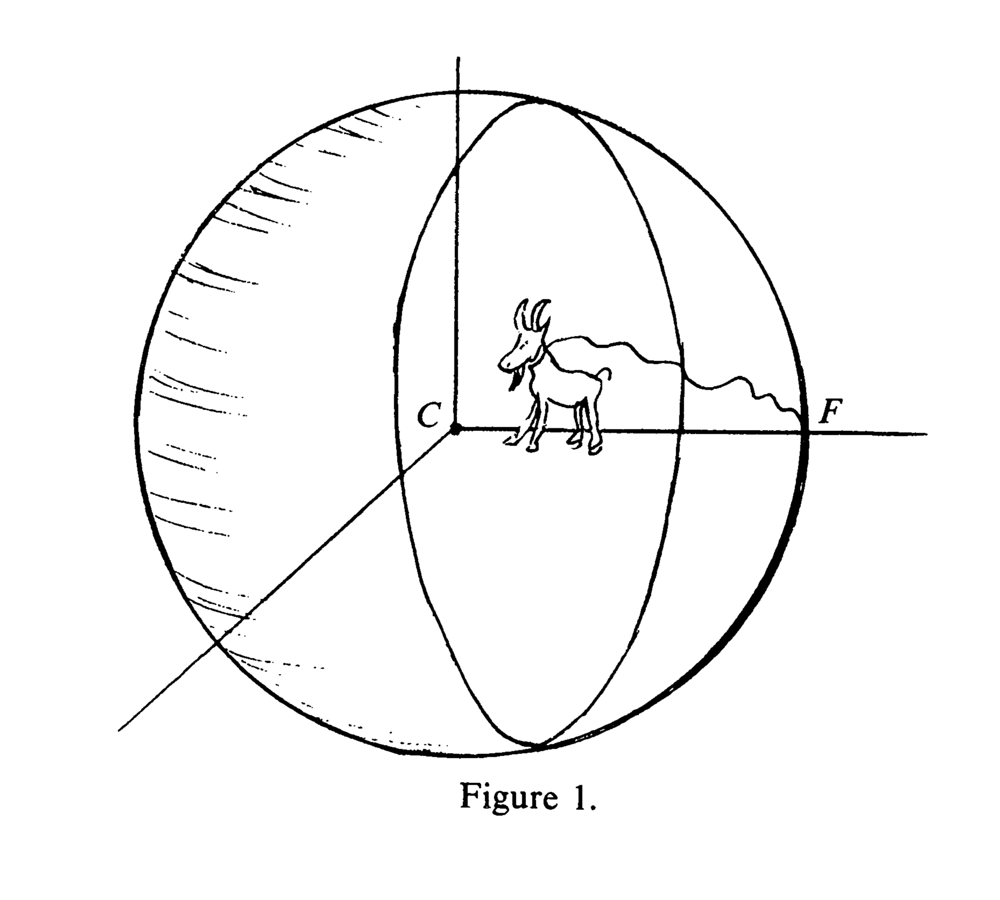

class: center, middle name:opening ## Data Intensive Brain Science .center[ <img src="images/biomedical-engineering.small.horizontal.white.png" STYLE="HEIGHT:100px;"/> Joshua T. Vogelstein <br> Dept. Biomedical Engineering <br> Kavli Neuroscience Discovery Institute <br> Johns Hopkins University <!-- {[bme](http://www.bme.jhu.edu/),[icm](http://icm.jhu.edu/),[cis](http://cis.jhu.edu/),[idies](http://idies.jhu.edu/),kavli,[cs](http://engineering.jhu.edu/computer-science/), [ams](http://engineering.jhu.edu/ams/), [neuro](http://neuroscience.jhu.edu/)} | [jhu](https://www.jhu.edu/) --> <br> questions: [jovo@jhu.edu](mailto:jovo at jhu dot edu) <br> slides: <http://brainx.io/BSI-google> ] --- class: center, middle # Motivation --- class: center, middle <img src="images/GeneralMHFacts.png" style="width: 100%;"/> <footer>source: NAMI</footer> --- class: center ## The Human Condition <iframe width="800" height="500" frameborder="0" scrolling="no" src="//plot.ly/~jovo/17.embed"></iframe> --- class: center ## The Grazing Goat Starves  --- class: center ## Our Social Cage <img src="images/PlanetOTApes_099Pyxurz.jpg" style="width: 60%;"/> --- # Goal Give each individual the tools she needs to move herself in the desired direction by the desired amount in our high-dimensional experience --- <iframe width="900" height="800" frameborder="0" scrolling="no" src="//plot.ly/~jovo/17.embed"></iframe> --- --- ### DIBS vs Data Science - Opportunities - low vs. high sample size - images vs. tables data types - Challenges - Data storage, management, visualization & access - Data analysis .center[ <img src="images/genetics_w355.jpg" style="width: 50%;"/> ] --- #### Data Intensive Biomedical Science (DIBS) <iframe width="700" height="500" src="https://www.youtube.com/embed/c-NMfp13Uug?autoplay=1&loop=1&start=110&end=221" frameborder="0" allow="autoplay; encrypted-media" allowfullscreen></iframe> --- class: center, middle <img src="images/sejnowski.jpg" style="width: 100%;"/> --- ### From Cosmos to Connectomes: The Evolution of Data-Intensive Science - Cosmology (at JHU/IDIES) founded data intensive science - We extended their framework to support brain sciences - Brain sciences are more heterogeneous than SDSS <img src="images/sdss.png" style="width: 100%;"/> --- #### Data Management, Storage, Visualization and Access: [Open Connectome Project](http://neurodata.io) - 200+ TB (largest) - 20+ publications/labs (Cell, Nature, Science) - 9+ species (most diverse) - many spatiotemporal scales <img src="images/OCPaper.png" style="position:absolute; bottom:20px; right:300px; width: 40%;"/> --- ### Data Analysis: the "best".... - [LOL](https://github.com/neurodata/LOL): linear classifier - [QOQ](https://github.com/neurodata/LOL): quadratic classifier - [RerF](https://github.com/neurodata/R-RerF/): nonlinear classifier - [MGC](https://github.com/neurodata/mgc): independence test - [FlashMatrix](https://github.com/flashxio/FlashX): matrix analysis library - [FlashGraph](https://github.com/flashxio/FlashGraphR): graph analytics library - [knor](https://github.com/flashxio/knor): k-means .center[ <img src="images/FigHDPower.png" style="width: 60%;"/> ] --- ### Global Leadership - [1st Global Brain Workshop](http://brainx.io) @ JHU, Spring 2016 - 60+ scientists, 15+ funders, 12+ countries - [Report in Neuron](http://dx.doi.org/10.1016/j.neuron.2016.10.033) (top 5% most popular article) - [Science](http://science.sciencemag.org/content/352/6283/277), [NIH](http://www.braininitiative.org/2016/04/22/international-brain-projects-considered/), [MIT Tech Review](https://www.technologyreview.com/s/602274/three-grand-challenges-for-brain-science-that-can-be-solved-in-10-years/), [Nature](http://www.nature.com/news/worldwide-brain-mapping-project-sparks-excitement-and-concern-1.20658) cover it. - 2nd Global Brain Workshop @ Rockefeller, Fall 2016 - 400+ scientists - [Report in Cell](http://dx.doi.org/10.1016/j.cell.2017.02.023) - [US State Dept Announcement](https://2009-2017.state.gov/r/pa/prs/ps/2016/09/262200.htm) - [3rd Global Brain Workshop](http://brainx2.io) @ JHU, Summer 2017 - [1st Global Brain Hackathon](http://neuroscience.uchicago.edu/hackathon/) @ MBL, Fall 2017 - 24 hackers - Chair of BRAIN/NIH Data Science Core Consortium - Member of Global Brain Initiatve --- ### What's Next - Globally democratizing science - Lowering the barrier to entry <img src="images/world.gif" STYLE="position:absolute; TOP:300px; LEFT:400px; WIDTH:500px;"/> <img src="images/lion-one.JPG" style="position:absolute; top:250px; left:100px; width:25%;"/> --- class: top, left .pull-left[ Internal Collaborations: - BME (Miller) - AMS (Priebe) - CS (Burns) - ChemBE (Schulman) - Physics (Szalay) - BioStats (Caffo) - Neuroscience (Huganir) - Applied Physics Lab Industry: - Google - Amazon - [gigantum](http://gigantum.io/) - [d8alab](https://d8alab.com/) ] .pull-left[ External Collaborations: - Allen Institute (Smith) - Janelia Research Campus - Stanford (Deisseroth) - Harvard (Engert) - Duke (Sapiro) - Baylor (Tolias) - Argonne National Labs (Kasthuri) Questions? - [jovo@jhu.edu](mailto:jovo@jhu.edu) - [neurodata.io](http://neurodata.io) ] <!-- ### Funding --> <!-- <img src="images/lion3.jpg" STYLE="position:absolute; TOP:200px; LEFT:0px; WIDTH:400px;"/> --> <!-- <br> <br> <br> --> <img src="images/funding/nsf_fpo.png" STYLE="position:absolute; TOP:550px; LEFT:10px; HEIGHT:100px;"/> <img src="http://brainx.io/images/funding/nih_fpo.png" STYLE="position:absolute; TOP:550px; LEFT:120px; HEIGHT:100px;"/> <img src="http://brainx.io/images/funding/darpa_fpo.png" STYLE="position:absolute; TOP:550px; LEFT:230px; HEIGHT:100px;"/> <img src="http://brainx.io/images/funding/iarpa_fpo.jpg" STYLE="position:absolute; TOP:550px; LEFT:430px; HEIGHT:100px;"/> <img src="http://brainx.io/images/funding/kavli_fpo.png" STYLE="position:absolute; TOP:550px; LEFT:550px; HEIGHT:100px;"/> <img src="http://brainx.io/images/funding/kndi_fpo.png" STYLE="position:absolute; TOP:550px; LEFT:650px; HEIGHT:100px;"/> --- ### Our Work @ BME/JHU | Agency | Year | RFP | | :--- | :--- | :--- | | NIH | 2012 | CRCNS Data Sharing | | DARPA | 2012| XDATA | NSF | 2013| BigData | NIH | 2014 | Transformative Research Award | DARPA | 2015| SIMPLEX | IARPA | 2016| MICrONS | NSF | 2016 | EAGER | NIH | 2017| Data Science Core | NSF | 2017| NeuroNex | Schmidt | 2018 | Science --- ##### Where Are We Now: Mesoscale Whole Clear Brain <iframe width="700" height="550" src="https://www.youtube.com/embed/c-NMfp13Uug?autoplay=1&start=110&end=221&loop=1" frameborder="0" allow="autoplay; encrypted-media" allowfullscreen></iframe> <!-- 200 TB, 20+ publications (Cell, Nature, Science), 20+ labs, 9+ species <img src="images/table1b.png" style="width: 70%;"/> --> --- ##### Where Are We Now: Nanoscale Brain Connectivity <iframe width="700" height="550" src="https://www.youtube.com/embed/nvXuq9jRWKE?autoplay=1&start=70&end=101&loop=1" frameborder="0" allow="autoplay; encrypted-media" allowfullscreen></iframe> --- ##### Where Are We Now: Whole Brain Activity <iframe width="700" height="550" src="https://www.youtube.com/embed/U_NvQ2g6dGc?autoplay=1&loop=1" frameborder="0" allow="autoplay; encrypted-media" allowfullscreen></iframe> <!-- background-image: url("images/OCPaper.png") background-size: contain; --> <!-- <img src="images/OCPaper.png" style="width: 100%;"/> -->